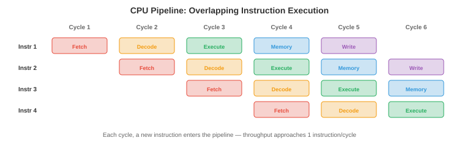

Sheet 12 closed by saying that Sheet 13 is where the sparse-matrix bill comes due, and that is true, but it undersells what is here. This is the first sheet where the bridge runs the other way: not "your mechanics explains their maths", but their machine was designed by people solving your problems. A processor pipeline is an assembly line because someone deliberately copied the assembly line. The memory hierarchy is material staging because the logistics problem is the same logistics problem.
Which means the correspondences in this part are unusually literal. Pipeline efficiency and line-balancing efficiency are not analogous formulae — they are \(\sum t_i / (n\max t_i)\) in both fields, and "speedup equals \(n\) times efficiency" holds on both sides (§13). Average memory access time is the expected-cost formula you use for a stockout (§15). A CNC drill cycle and a delivery route are the same NP-hard problem (§09).
That last one is the part worth arriving for. You were taught largest-candidate and ranked-positional-weight for line balancing, and nearest-neighbour for a drill path, and you were told they were "practical". The real reason is that the exact problems are NP-hard, and §09 shows a case where the heuristic you were taught lands one station worse than optimal. Complexity theory is the missing half of an industrial engineering course.
Chapter 13’s source is 1,243 lines across five files. Splitting at the natural seams:
- Part 1 (this sheet) — discrete maths and computer architecture. The mathematics computing is built on, and the machine it runs on.
- Part 2 — operating systems and concurrency. Sharing one machine: processes, scheduling, deadlock, and Amdahl’s law against the theory of constraints.
- Part 3 — programming languages and compilation, plus the worked example, the question bank and the concept map for the whole chapter.
Each part carries its own provenance appendix covering its own material, so nothing is deferred and then lost.
- File 02’s coding task 3 claims to demonstrate that floating-point addition is not associative. Run it and both sides print \(0.0\); the commented expectation ("should be 1.0") is wrong, and the example shows no difference at all. The claim is true, the demonstration is not (§11).
- File 01 states \(|E| \leq 3|V| - 6\) for planar graphs with no hypothesis. It needs \(|V| \geq 3\); at \(|V| = 2\) the bound is \(0\) and a single edge breaks it (§07).
- File 01 states the Euler-path condition without requiring the graph to be connected, which it must be (§07).
Read the verdict column. Where it says identity the two sides are the same formula or the same algorithm, checked numerically. Where it says no counterpart there is genuinely nothing in your training to hang it on, and pretending otherwise would be the trap this series exists to avoid.
| What you already know | What this chapter calls it | Verdict |
|---|---|---|
| Line balancing: cycle time, bottleneck station, balance delay | CPU pipelining: clock period, critical stage, bubbles | Identity. Same efficiency formula, same speedup law. See §13. |
| Fault tree analysis; series and parallel reliability blocks | Boolean algebra, AND/OR gates, De Morgan’s laws | Identity. The series/parallel duality is De Morgan. See §02. |
| Line-side stock, supermarkets, the plant store, the supplier | L1/L2/L3 cache, RAM, disk | Same problem, same formula. AMAT is the stockout expectation. See §15. |
| Assembly line balancing; CNC drill-path optimisation | Bin packing; the travelling salesman problem | The same problems, both NP-hard. This is why you got heuristics. See §09. |
| The bisection method for root finding | Binary search | Identical algorithm, same \(\lceil\log_2\rceil\) count. See §06. |
| Building a simple truss: triangle, then two members and a joint | Proof by induction | Identity. \(m = 2j-3\) is the inductive invariant. See §04. |
| Assembly precedence diagrams; CPM networks | Partial orders; the happens-before relation | Identity. Incomparable tasks are concurrent tasks. See §05. |
| Significant figures; a micrometer’s relative precision | IEEE 754 floating point | The same idea, and fixed point is the dial gauge. See §10. |
| An andon cord; a machine alarm | A hardware interrupt and its handler | The same mechanism, down to the save-and-restore. See §17. |
| Conveyors and AGVs moving material without the operator | DMA | The same move, for the same reason. See §17. |
| Euler’s polyhedron formula \(V - E + F = 2\) | Planarity and graph colouring | The same formula, with one unstated hypothesis. See §07. |
| Subtracting two large lengths to get a small extension | Catastrophic cancellation | The same failure. It is why a strain gauge exists. See §10. |
| Summing a column of numbers in any order | Floating-point addition | Does not transfer. Addition is not associative here. See §11. |
| “More buffer stock cannot reduce throughput” | Page replacement under FIFO | False. Bélády’s anomaly: more frames, more faults. See §16. |
| A 95% first-pass yield is a 5% problem | A 95% cache hit rate; 95% branch accuracy | Badly wrong. 5% misses cost 6×, not 5%. See §§14–15. |
| “No closed-form solution” — the quintic, the three-body problem | Undecidability; the halting problem | Not the same thing, and the confusion is common. See §08. |
| Anything in your training | The uncountability of the reals, and its consequence | No counterpart. Most functions cannot be computed at all. See §08. |
The first nine sections are mathematics, the last nine are hardware, and the join is §12 where Boolean algebra becomes a physical gate. If your time is short, the three sections that will change how you work are §09 (why your heuristics are heuristics), §13 (the pipeline identity) and §15 (why a 95% hit rate is not a 95% result). The amber rows are all in the second half except §08, which is the one genuinely new idea in this part.
Every sheet so far has run on continuous mathematics: derivatives, integrals, eigenvalues, probability densities. Computers are not continuous. They hold bits, step through states, and branch. Discrete mathematics is the toolkit for objects that come in countable, separated pieces.
You already own more of it than the name suggests. Counting members and joints in a truss is combinatorics. A bill of materials is a tree. An assembly precedence diagram is a partial order. A fault tree is a Boolean formula. What you have not had is the vocabulary, and — more importantly — the results that tell you when a discrete problem is hopeless rather than merely hard. That is §§08–09, and it is the payload of this half.
A truth table with \(n\) inputs has \(2^n\) rows and you check every one. That is the same instinct as a full factorial design of experiments, or checking every load case rather than the one you expect to govern. The difference is that in discrete maths the exhaustive check is often a proof rather than evidence, because the space is genuinely finite. Where the space is not finite, you need §04.
Propositional logic is the algebra of statements that are true or false. Connectives combine them: AND (\(\wedge\)), OR (\(\vee\)), NOT (\(\neg\)), IMPLIES (\(\to\)). A truth table lists all \(2^n\) input combinations.
You have drawn this before and called it something else. A fault tree is a propositional formula rendered as a diagram: the top event is the conclusion, the gates are connectives, and the basic events are the propositions. An AND gate says every input must occur; an OR gate says any one will do. Fault tree analysis is not like propositional logic. It is propositional logic with a drawing convention.
De Morgan is the series/parallel duality
The two identities the source calls De Morgan’s laws are
and you use them every time you convert a reliability block diagram. A series
system works only if every component works — an AND — so
\(R = \prod R_i\). A parallel system fails only if every component fails —
an AND on the failures, which is an OR on the successes — so
\(R = 1 - \prod(1 - R_i)\). The reason the second formula is written in terms of
failures is precisely De Morgan’s law: to turn an OR of successes into something
computable, you negate into an AND of failures. Verified over all \(2^4\) assignments
with zero violations under [Ch13 s02].
The practical consequence is one you already exploit: redundancy at the component level beats redundancy at the system level, and the reason is that the two arrangements are different Boolean formulae over the same variables. The lab draws both.
You have two pumps and two valves, each with reliability \(R\). You can build (a) two complete pump–valve trains in parallel, or (b) a parallel pump pair feeding a parallel valve pair. Which is more reliable?
in parallel
at each stage
for reference
The source flags one row of the implication truth table as counterintuitive: when \(p\) is false, \(p \to q\) is true regardless of \(q\). "If pigs fly, I am the king of England" is a true statement. This is vacuous truth, and it reliably annoys people meeting it for the first time.
It stops being strange the moment you read it as an acceptance criterion. A specification says: if the pressure exceeds 10 bar, the relief valve shall open. You test to 8 bar. Has the unit failed the test? No — the condition never arose, so the requirement was never violated. The clause is satisfied vacuously, and every inspection report you have ever signed uses this convention without naming it.
The contrapositive \(p \to q \equiv \neg q \to \neg p\) is equally familiar: "if the ground is not wet, it did not rain" carries exactly the information of "if it rains, the ground is wet". In failure investigation this is the move from "this defect causes that symptom" to "no symptom, therefore not that defect" — which is how you eliminate causes without reproducing them.
The danger is the same in both fields. A specification whose precondition never fires
is trivially met and tells you nothing, so a test suite can report 100% of
requirements satisfied while having exercised none of them. In software this is a
well-known way for a test to pass without testing anything — and Sheet 11 hit
exactly this failure in its own verification script, where max(0, -x)
could never go negative and so asserted nothing. A clause that cannot fail is not
evidence. Check that your preconditions actually fired.
Proof by induction establishes a statement for all natural numbers in two moves: show it holds at a base case, then show that if it holds at \(k\) it holds at \(k+1\). The source demonstrates it on \(\sum_{i=1}^{n} i = n(n+1)/2\), which is fine and forgettable.
Here is the version you have done with a pencil and a ruler. A simple truss is built by a rule: start with a triangle, then add each new joint with exactly two new members. Every truss built this way is statically determinate and satisfies
where \(m\) is members and \(j\) is joints. Why is that true for every such truss, including ones nobody has drawn? Because it is a proof by induction and you were taught the proof without being told its name:
- Base case. A triangle: \(j = 3\), \(m = 3\), and \(2(3) - 3 = 3\). Holds.
- Inductive step. Assume \(m = 2j - 3\). Add one joint and two members: \(j \to j+1\) and \(m \to m+2\). Then \(m + 2 = 2j - 3 + 2 = 2(j+1) - 3\). The invariant survives the step.
- Conclusion. Every simple truss, at any size, is statically determinate.
Verified for eight construction steps under [Ch13 s04], ending at
\(j=11\), \(m=19\), \(2j-3=19\). The reason the GATE formula can be trusted for a truss
you have never seen is exactly the reason induction works, and the two facts are the
same fact.
Every recursive algorithm carries an implicit inductive proof: the base case is the termination condition and the inductive step is the recursive call. If you can build a truss by a rule and argue the invariant survives each application, you can read a recursive function the same way — and, more usefully, you can tell when one is wrong, because a recursion with no base case is a construction rule with no triangle to start from.
\(m = 2j - 3\) is necessary but not sufficient for determinacy, and the same gap appears in every inductive argument. A truss can satisfy the count and still be unstable if the members are badly placed — three collinear members at a joint, or a panel left as a mechanism while another is over-braced. The induction proves that trusses built by that rule satisfy the count; it does not prove that everything satisfying the count was built by the rule. Confusing a necessary condition with a sufficient one is the single most common error in reading a proof, and it is the same error as §22 of Sheet 12 (equivariance is necessary, not sufficient).
Sets and their operations you met in Sheet 05 under probability. The new object is a relation: a set of ordered pairs saying which elements relate to which. The source lists four properties — reflexive, symmetric, antisymmetric, transitive — and two combinations that matter.
An equivalence relation (reflexive, symmetric, transitive) carves a set into disjoint classes. You use one whenever you sort parts into tolerance bands: within a band parts are interchangeable, across bands they are not, and every part is in exactly one band. That is a partition, and a partition is what an equivalence relation produces.
A partial order (reflexive, antisymmetric, transitive) is the more useful one, and you have drawn many. An assembly precedence diagram is a partial order: the sump must be fitted before the oil pump, the oil pump before the cover. Some pairs are ordered, and crucially some are not — fitting the alternator and fitting the water pump are incomparable, so either order works.
The source says the "happens-before" relation on events is a partial order, and that events not ordered by it are concurrent and may execute in any relative order. That is precisely what your precedence diagram already means: two tasks with no path between them can be done in either order, or at the same time on two benches. Part 2 builds the whole of concurrency on this observation, so it is worth having the mechanical reading first — a race condition is two operations with no precedence arrow between them and a shared resource.
A function is a relation where every input has exactly one output. The three adjectives are worth the ten seconds: injective means no two inputs collide (lossless compression must be injective, or you could not decompress), surjective means every output is reachable, bijective means both, so an inverse exists (encryption must be bijective, or decryption would be ambiguous). A fit that maps two different shaft diameters to the same bore class is not injective, and that is exactly why you cannot recover the diameter from the class.
A recurrence relation defines each term from earlier terms, and it is how the cost of a recursive algorithm is expressed. The source gives the Master Theorem for \(T(n) = aT(n/b) + O(n^d)\): compare \(d\) against \(\log_b a\), and whichever dominates sets the answer.
Two instances are worth your attention because you have already run both.
Binary search is bisection
Binary search finds a value in a sorted list by halving the interval: \(T(n) = T(n/2) + O(1)\), giving \(O(\log n)\). The bisection method finds a root by halving the bracket. These are not analogous methods. They are the same method, with "is the target larger?" replaced by "did the sign change?".
Run it: bisecting \(x^3 - 2x - 5\) on \([2,3]\) to a tolerance of \(10^{-10}\) takes
34 iterations, and \(\lceil \log_2((b-a)/\varepsilon) \rceil = 34\) exactly
([Ch13 s06]). The number of iterations a numerical-methods course makes you
compute is the complexity of binary search.
Merge sort and the FFT are the same recurrence
\(T(n) = 2T(n/2) + O(n)\) — split in half, solve both, spend linear work combining.
With \(a=2, b=2, d=1\) we get \(d = \log_b a\), the balanced case, so \(O(n \log n)\).
That is merge sort. It is also the FFT you used for vibration spectra in Sheet 09:
two half-length transforms plus a linear butterfly pass. Counting operations gives
identical totals at \(n = 8, 64, 512, 4096\) ([Ch13 s06]).
So "why is the FFT \(n \log n\)?" and "why is merge sort \(n \log n\)?" have one answer, and it is the Master Theorem. Divide-and-conquer is a single idea that a mechanical engineering degree teaches three times without connecting them.
You bisect a bracket of width 1 down to a tolerance of \(10^{-10}\). Roughly how many iterations, and how does that change if you tighten the tolerance to \(10^{-13}\)?
taken
predicted
remaining
per iteration
Sheet 12 covered graphs as stiffness matrices. This section is the combinatorial side, and it opens with a formula you have met on a polyhedron:
Euler’s formula, for any connected graph drawn in the plane without crossings, counting the outer region as a face. It is the same relation that holds for the vertices, edges and faces of a convex polyhedron, and it is what a mesh checker uses to decide whether a surface mesh is closed and manifold.
From it the source derives \(|E| \leq 3|V| - 6\), so planar graphs are sparse — a useful fact for circuit routing and for anything laid out on a board.
Both are small, and both are the kind of thing that turns a true theorem into a false sentence:
- \(|E| \leq 3|V| - 6\) needs \(|V| \geq 3\). At \(|V| = 2\) the bound is
\(0\), yet two nodes joined by one edge are obviously planar. At \(|V| = 1\) the
bound is \(-3\). Checked under
[Ch13 s07]. The source states it with no condition at all. - The Euler-path condition needs the graph to be connected. The source says a Euler path exists "if and only if the graph has exactly 0 or 2 nodes with odd degree". Take two disjoint triangles: every node has degree 2, so there are zero odd-degree nodes, and there is no path visiting all six edges because you cannot get from one triangle to the other. The degree condition is necessary, not sufficient, without connectivity — the same necessary/sufficient gap as §04.
Graph colouring assigns colours so no two adjacent nodes share one, and the minimum number needed is the chromatic number \(\chi(G)\). The four-colour theorem caps it at 4 for planar graphs. In computing this models register allocation; in your world it models scheduling with conflicts — jobs that cannot share a machine or a time slot get an edge between them, and a valid colouring is a valid schedule. Keep that in mind for the next section, because general graph colouring is NP-complete.
One contrast is worth carrying: a Euler path (every edge once) is decidable by counting degrees, in linear time. A Hamiltonian path (every node once) is NP-complete. Two problems that sound like rephrasings of each other sit on opposite sides of the tractability line, and nothing in the wording tells you which is which.
This is the one section in this part with no mechanical counterpart, and the honest thing is to say so rather than manufacture one.
A Turing machine is a minimal model of computation, and the Church–Turing thesis holds that anything effectively computable can be computed by one. Every real programming language is Turing complete, so languages differ in convenience, speed and safety — never in what they can compute.
The halting problem asks whether a given program on a given input will eventually stop. Turing proved in 1936 that no algorithm decides this in general, by a beautifully short contradiction: suppose \(H(P,x)\) reports whether \(P\) halts on \(x\). Build \(D\) that runs \(H(D,D)\) and does the opposite. If \(H\) says \(D\) halts, \(D\) loops. If \(H\) says \(D\) loops, \(D\) halts. So \(H\) cannot exist.
There is a second result of the same flavour. There are only countably many programs (each is a finite string over a finite alphabet, so they can be listed) but uncountably many functions from integers to integers. So almost every function is not computable by any program — not because we have not found the algorithm, but because there are not enough algorithms to go round.
You have met problems with no analytic solution: the general quintic, the three-body problem, Navier–Stokes in the general case. It is tempting to file undecidability alongside them. Do not. They are different in kind:
- No closed form means no finite expression in elementary functions. You can still compute the answer to any accuracy you like — that is what every numerical method you own is for, and it is why a lack of closed form has never once stopped you designing anything.
- Undecidable means no algorithm gives the right answer for all inputs, ever, at any accuracy, with any amount of computation. There is no numerical method to fall back on, because the object being asked for does not exist.
The practical consequences are real: there is no perfect deadlock detector, no perfect virus scanner, no perfect optimising compiler. Each would decide the halting problem. Real tools use heuristics that work on common cases and are provably wrong on some input. That is a different engineering posture from "our solver has not converged yet", and confusing the two leads people to keep looking for a tool that cannot exist.
Between "easy" and "impossible" sits the territory most of your industrial engineering syllabus quietly occupies.
P is the class of problems solvable in polynomial time — sorting, shortest path, matrix multiplication. NP is the class where a proposed solution can be checked in polynomial time, even if finding one seems to need exponential search. Every problem in P is in NP. Whether \(P = NP\) is the central open question in the subject, and most people expect not.
NP-complete problems are the hardest in NP: solve any one efficiently and you solve them all. And here is the part nobody mentioned during your degree.

Assembly line balancing is bin packing. CNC drill-path optimisation is the travelling salesman problem. Job-shop scheduling is NP-hard. Cutting stock and nesting are NP-hard. Scheduling with conflicts is graph colouring. Every one of these was taught to you as a heuristic — largest-candidate, ranked positional weight, nearest-neighbour, first-fit-decreasing — and the reason was never stated. The reason is this section.
Two measurements make it concrete ([Ch13 s09]). First, a line-balancing
instance with tasks \(\{3,5,7,4,2,2,3,4\}\) and a cycle time of 10: the
largest-candidate rule returns 4 stations, and exhaustive search finds a valid
3-station balance. The heuristic you were taught is one whole station worse than
optimal on an eight-task problem — and on a real line that is a workstation, an
operator and a floor-space bill.
Second, nine hole centres on a plate. The optimal drill tour is 311.92 mm; the nearest-neighbour tour that a CAM post-processor produces is 406.22 mm, 30.2% longer. Exhaustive search over nine holes means \(8! = 40{,}320\) tours, which is instant. Over twenty holes it is \(19! \approx 1.2\times10^{17}\), which is not.
That growth is the whole argument. It is not that nobody has been clever enough to find the exact rule; it is that an exact rule that scales would settle \(P = NP\) and collect a million-dollar prize. What you get instead are approximation algorithms with guarantees — first-fit-decreasing is provably within \(11/9\) of optimal plus a constant — and heuristics with none.
Knowing a problem is NP-hard changes your behaviour in three concrete ways. You stop looking for the exact method, because it is not coming. You start asking what guarantee your heuristic carries, because "within 11/9 of optimal" and "works well in practice" are very different claims to put in front of a customer. And you look for special structure, because many NP-hard problems are easy on restricted inputs — a line with a strictly serial precedence graph balances in linear time, and holes on a rectangular grid have an obvious optimal tour. The hardness is a worst-case statement, and your instance may not be the worst case.
The largest-candidate rule is the standard line-balancing heuristic. On a small eight-task problem, how close to optimal should you expect it to be?
result
optimum
penalty
exhausted
[Ch13 s09]) — which is the answer to the prediction, within one
station, sometimes worse.
It is not unpredictable, because first-fit-decreasing carries a proven \(11/9\) bound; but
it is not optimal either, and nothing in the rule tells you which case you are in.
Drill path draws the nearest-neighbour tour against the exhaustive optimum, and the
heuristic’s habit is visible: it takes the cheap hops early and is left with one long
return leg. The last readout is the number of candidates exhaustive search had to examine
— watch it climb as you reseed, and note that it is already in the tens of thousands
at nine holes. At twenty it would be \(10^{17}\), which is why your CAM software ships the
heuristic and not the optimum.
Binary and hexadecimal need no bridge: base 2 with bit weights \(2^i\), base 16 as a compact way of writing four bits at a time. Two’s complement gives the top bit weight \(-2^{n-1}\) instead of \(+2^{n-1}\), which makes subtraction reuse the addition circuit — the same trick as measuring a deviation from a datum rather than an absolute position.
IEEE 754 floating point is where the real bridge is, and it is a bridge to metrology.

A float stores a sign, an exponent and a mantissa: \((-1)^s \times 1.m \times 2^{e-\text{bias}}\). The exponent picks the magnitude and the mantissa carries the digits. Which means:
A float has constant relative precision — the same number of significant
figures at every magnitude. A fixed-point number, like a graduated scale or a dial
gauge, has constant absolute precision — the same smallest division
everywhere, so its relative precision collapses for small readings. Measured under
[Ch13 s10]: in float32 the absolute step (the ulp) goes
\(1.2\times10^{-7}\), \(6.1\times10^{-5}\), \(6.3\times10^{-2}\), \(64\) at
\(x = 1, 10^3, 10^6, 10^9\) — growing by a factor of \(10^9\) — while
ulp\(/x\) stays pinned near \(6\times10^{-8}\) throughout.
So the "\(\approx 7\) decimal digits" quoted for float32 is a significant-figure count, and it is exact: 24 mantissa bits give \(24\log_{10}2 = 7.22\) digits. float64’s 53 bits give 15.95. The formats are not "more accurate" in the way a better micrometer is; they carry more figures, which is a different promise.
Catastrophic cancellation, and why the strain gauge exists
The failure mode follows immediately. Subtract two nearly equal large numbers and the leading figures cancel, leaving only the few noisy trailing ones — the relative error of the result is enormous even though both inputs were fine.
Measure a 1000 mm bar that extends to 1000.0002 mm and compute the strain in
float32 by subtracting. The true strain is \(2.0\times10^{-7}\); the computation returns
\(1.83\times10^{-7}\), an 8% error ([Ch13 s10]) — from
arithmetic alone, with no measurement noise at all.
You already avoid this, and you were probably never told why. A strain gauge measures the change directly rather than measuring two lengths and subtracting. A dial indicator is zeroed on the datum. A differential pressure transducer reads \(\Delta p\), not two absolute pressures. Every one of those instruments exists to keep you from subtracting two large nearly-equal numbers, which is the same rule numerical analysis states as "avoid catastrophic cancellation". Two fields, one instinct, arrived at independently.
In float32, how does the smallest representable step change between \(x = 1\) and \(x = 10^9\)?
(absolute step)
(relative step)
decimal figures
two lengths
In arithmetic, \((a+b)+c = a+(b+c)\) always. In floating point it does not, because each addition rounds, and where the rounding falls depends on the magnitudes involved. This is the single most consequential thing on this page for anyone who will run a long simulation or train a model.
File 02’s coding task 3 sets out to show non-associativity with
\(a = 10^8\), \(b = 1\), \(c = -10^8\) in float32, commenting that \((a+b)+c\)
"should be 1.0" and \(a+(b+c)\) "might lose the 1.0". Run it
([Ch13 s11]):
Both sides are identical, and the commented expectation is wrong. The reason is in the numbers: one ulp at \(10^8\) in float32 is 8, so \(1.0\) is below the representable step and is discarded on either side of the bracket. The example is a demonstration of absorption, not of non-associativity.
The claim itself is true; it just needs a case where the two groupings round differently. Take \(a = 10^{-8}\), \(b = 1\), \(c = -1\): then \((a+b)+c = 0\) because \(a\) is absorbed by \(b\), while \(a+(b+c) = 10^{-8}\) because \(b+c\) cancels exactly first. Same three numbers, two brackets, two answers.
The engineering consequence is one you already half-know. Summing a long column of numbers gives a different total depending on order, and the rule "add the small terms first" is not folklore — it keeps the running total from growing so large that later terms fall below its ulp. Kahan summation is the systematic version: carry a separate running compensation term for the bits that were lost. It exists for exactly this reason.
And it explains something otherwise baffling about large computations: a parallel sum that splits the work differently across runs will produce bitwise different answers, because it has changed the bracketing. That is not a bug, and chasing it as one has cost a great many people a great deal of time.
This is the join between the two halves of this part. §02’s Boolean algebra becomes a physical circuit, and the circuit becomes a processor.
A logic gate is a circuit implementing one connective. NAND is universal — every other gate can be built from NANDs alone — which is why it is the cell that a fabrication process is characterised on. XOR gives the sum bit of binary addition, AND gives the carry, and those two together are a half adder. Chain full adders and you have an \(n\)-bit adder. That is the whole of integer arithmetic, built from the fault-tree gates of §02.
The CPU assembles: an ALU (the adders and logic), registers (~0.3 ns storage), a program counter, and a control unit. It runs a three-beat cycle — fetch, decode, execute — billions of times a second.
At 4 GHz a cycle is 0.25 ns, and in that time light travels
7.5 cm ([Ch13 s07]). Signals in copper are slower still. So a
modern chip is larger than one clock period, and a signal physically cannot
cross it in a cycle. That is a propagation-delay constraint of exactly the kind you
meet in long hydraulic lines or in a control loop with transport lag, and it is the
reason chips are organised into local regions rather than one flat design.
The instruction set architecture is the hardware–software contract. CISC (x86) allows complex variable-length instructions; RISC (ARM, RISC-V) keeps them simple and fixed-length, which makes them easier to pipeline. The practical distinction has blurred, since modern x86 decodes its complex instructions into simple internal operations — which is itself a manufacturing move: accept an awkward incoming specification and convert it into a standard internal part.
The source introduces pipelining by saying it works "like an assembly line". It is worth pushing past the simile, because the correspondence is not a resemblance — it is the same formulae, and the identity is checkable.
Without pipelining a CPU finishes one instruction before starting the next, so four of its five units idle at any moment. Pipelining overlaps them: while instruction 1 executes, instruction 2 decodes and instruction 3 is fetched. Five instructions in flight, throughput approaching one per cycle.

| Production line | CPU pipeline | Expression |
|---|---|---|
| Cycle time | Clock period | \(\max_i t_i\) — the bottleneck alone |
| Production rate | Throughput | \(1/\max_i t_i\) |
| Throughput time (lead time) | Instruction latency | \(\sum_i t_i\) |
| Line-balancing efficiency | Pipeline efficiency | \(\dfrac{\sum_i t_i}{n \max_i t_i}\) |
| Balance delay | Pipeline overhead | \(1 - \text{efficiency}\) |
| Bottleneck station | Critical stage | the \(i\) attaining \(\max t_i\) |
| Starving and blocking | Bubbles and stalls | idle time at a non-critical stage |
| Number of stations | Pipeline depth | \(n\) |
And the law that governs both, checked under [Ch13 s13] on stage times
\(\{2.0, 3.5, 1.5, 3.0, 2.5\}\):
Those stage times give a cycle of 3.5, a latency of 12.5, an efficiency of 0.714 and a speedup of 3.571 against an ideal of 5 — and \(5 \times 0.714 = 3.571\) exactly. Perfectly balance the line and efficiency hits 1.000 with speedup exactly 5.
Adding stages never helps unless they are balanced. A five-stage pipeline whose stages are \(\{1,1,1,1,6\}\) has a cycle time of 6 and a speedup of \(10/6 = 1.67\), barely better than no pipeline at all. This is why a CPU designer splits the slowest stage rather than adding stages anywhere, and it is why you rebalance around the bottleneck station instead of buying another machine. Identical decision, identical arithmetic.
A 5-stage pipeline has stage times \(\{1,1,1,1,6\}\) in nanoseconds. You add a sixth stage by splitting one of the 1 ns stages in two. What happens to throughput?
= max t
Σt / (n max t)
Σt / max t
Σt
A pipeline only reaches one-per-cycle if nothing disturbs it. Three things do, and each has a shop-floor twin.
A data hazard is an instruction needing a result the previous one has not finished producing — a station waiting on the part still being worked upstream. The fix, forwarding, routes the result straight from one stage to the next without waiting for it to be filed away. That is handing the part directly across rather than returning it to the stores and drawing it again.
A structural hazard is two instructions wanting the same unit at once — two jobs needing the one crane. Duplicate the resource or stall.
A control hazard is the expensive one. At a branch, the CPU does not know which instruction comes next until the branch resolves. Branch prediction guesses and runs ahead speculatively; a wrong guess means everything fetched since must be thrown away and the pipeline refilled. The source reports modern predictors as >95% accurate with a misprediction costing around 15 cycles.
Cycles per instruction under mispredictions is \(\text{CPI} = 1 + p\,k\) for miss rate
\(p\) and penalty \(k\). At the source’s own figures, \(p = 0.05\) and
\(k = 15\) give \(\text{CPI} = 1.75\) — 75% more cycles per instruction
from a 5% error rate ([Ch13 s14]). At 90% accuracy it is 2.5, a
slowdown of two and a half times.
This is the shape of a changeover, and it is the reason single-minute exchange of die matters so much more on a deep line than a shallow one. A stoppage does not cost you the stoppage; it costs you the time to empty and refill every station. The deeper the pipeline, the larger \(k\), and the more a small disturbance rate dominates the average.
The instinct that a 95% success rate is "a 5% problem" is wrong here, and it is wrong for the same reason in §15. What matters is rate multiplied by severity, and when the severity is 15× the nominal, a small rate dominates the average completely. A first-pass yield of 95% on a process where rework costs fifteen times the original operation is not a 5% loss of capacity — it is a 75% one. The arithmetic is identical; only the vocabulary differs.
Fast memory is small and expensive; large memory is slow and cheap. The resolution is a hierarchy, and it works because of locality: programs reuse the same data (temporal) and nearby data (spatial).

| Computing | Latency | Manufacturing |
|---|---|---|
| Registers | ~0.3 ns | Parts in the operator’s hand |
| L1 cache | ~1 ns | Line-side bin at the workstation |
| L2 cache | ~4 ns | Cell supermarket |
| L3 cache | ~10 ns | Shared stock at the end of the line |
| RAM | ~50–100 ns | The plant store |
| SSD | ~10–100 µs | Regional warehouse |
| HDD | ~5–10 ms | The supplier |
Register to RAM is a factor of about 270; register to disk about
\(3\times10^{7}\) ([Ch13 s15]), which matches the source’s quoted
~300× and ~30,000,000×. And the formula for what the hierarchy actually
delivers is one you have written under another name:
Average memory access time: hit rate times the fast path, miss rate times the slow path. That is the expected-value calculation of Sheet 05, and it is exactly the expected cost of a stockout — probability times consequence.
With L1 at 1 ns and RAM at 100 ns, a 95% hit rate gives
\(\text{AMAT} = 0.95(1) + 0.05(100) = 5.95\) ns — nearly six times
slower than pure L1, from a 5% miss rate ([Ch13 s15]). At 99% it is
still 1.99 ns, twice as slow. The last 1% of hit rate is worth more than the first
50%, which is the same reason the last few percent of line-side availability is where
all the money is.
This is why cache-friendly code can be an order of magnitude faster than naive code with identical arithmetic, and why the practical advice for matrix work — walk memory sequentially, match the array layout, size your blocks to the cache — is not micro-optimisation. It is the difference between having the part at the bench and sending someone to the store.
L1 is 1 ns and RAM is 100 ns. You improve the hit rate from 95% to 99%. By what factor does average access time improve?
pure L1
spent missing
+1 point
Virtual memory gives every process its own apparently large, contiguous address space. Addresses are split into fixed-size pages (usually 4 KB), and a page table maps virtual pages to physical frames. The TLB caches recent translations, because the page table itself lives in slow RAM.
A page fault is an access to a page not currently in RAM: the OS fetches it from disk, costing millions of cycles. Fault often enough and you get thrashing, where the machine spends all its time fetching and none computing. That is a line that spends its shift chasing material, and the §15 arithmetic says why it collapses so completely rather than degrading gently.
Virtual memory also buys isolation: one process cannot corrupt another’s memory, because their virtual addresses map to different physical frames. That is the foundation of everything part 2 says about protection.
Page replacement, and an anomaly worth knowing
When RAM is full something must be evicted. LRU evicts the least recently used page and works well. FIFO evicts the oldest, which is simpler and can evict a page that is in constant use. Bélády’s optimal evicts whatever will be needed furthest in the future — unimplementable, since it requires foreknowledge, but useful as a benchmark. Those three are exactly your inventory issue policies, right down to the third one being a perfect demand forecast that nobody has.
Here is a belief that is safe on a shop floor and false here: more buffer cannot
make throughput worse. Under FIFO replacement it can. On the reference string
\(1,2,3,4,1,2,5,1,2,3,4,5\) ([Ch13 s16]):
| Frames available | FIFO page faults | LRU page faults |
|---|---|---|
| 3 | 9 | 10 |
| 4 | 10 | 8 |
| 5 | 5 | 5 |
Giving FIFO more memory makes it fault more. This is Bélády’s anomaly, it is not a rounding artefact, and it is not in the source. LRU cannot do it — it belongs to a family called stack algorithms, whose contents at \(n\) frames are always a subset of their contents at \(n+1\), which makes monotonicity automatic. FIFO has no such property.
The transferable lesson is about policy, not about memory: adding capacity is only guaranteed to help if your issue policy has the stack property. A strict first-in-first-out issue rule does not, which is a genuinely counterintuitive thing to know about a stores policy and is the sort of result that only shows up if you compute it.
The CPU has to deal with slow outside things: disks, network cards, keyboards, GPUs. There are two ways, and you have opinions about both.
Polling means checking the device in a loop until it is ready. That is an operator standing at a machine watching a gauge, and it wastes exactly what you would expect.
Interrupt-driven I/O means the device raises a signal when it is ready. The CPU gets on with other work; when the signal arrives it saves its state, jumps to a handler via the interrupt vector table, services the device, restores state and resumes where it left off.
A machine raises an alarm. The operator notes where they were, walks to the station, follows the documented response for that specific alarm code, resolves it, and returns to exactly the task they suspended. Interrupt vector table, interrupt handler, saved context, resume. The mechanism is the same and so is the argument for it: you do not get more capacity by watching for problems, you get it by being told about them.
DMA (direct memory access) is the other half. For a bulk transfer, having the CPU copy byte by byte is absurd; a DMA controller moves the data between device and RAM directly and raises an interrupt when finished. The CPU sets up the job and goes back to work. That is a conveyor or an AGV: the skilled resource specifies the move and does not perform it.
This matters for anything on a GPU. Moving a model to the device is a DMA transfer over the PCIe bus — roughly 32 GB/s on a PCIe 4.0 x16 slot, per the source. Bus bandwidth, not compute, is frequently the binding constraint, because the GPU can consume data faster than the bus delivers it. That is a bottleneck in the strict theory-of-constraints sense, and part 2 makes it quantitative with Amdahl’s law.
The mechanisms above are stable; the figures are not. Latencies, bus bandwidths and predictor accuracies are quoted from the source as of its writing, and they move with each hardware generation. Treat the ratios as durable — registers vastly faster than RAM, RAM vastly faster than disk, bus slower than compute — and treat any specific nanosecond or GB/s figure as a claim with a date on it. Nothing in this part depends on a particular number except where it is computed from the source’s own stated figures, which is marked each time.
What parts 2 and 3 carry
beyond the chapterThis part built the machine and the mathematics under it. Two debts are now outstanding, and both are promises rather than hand-waves.
Part 2 — operating systems and concurrency. §05 defined a partial order and observed that incomparable tasks are concurrent. §16 gave every process an isolated address space without saying who enforces it. §13 showed that a pipeline is governed entirely by its bottleneck, and §17 pointed at the PCIe bus as one. Part 2 collects all three: processes and scheduling, the synchronisation that makes concurrent access safe, deadlock and its four conditions, and Amdahl’s law — which is the theory of constraints, written as an equation, and which says exactly how much a bottleneck costs you no matter how much parallel capacity you add.
Part 3 — programming languages and compilation, plus the chapter’s worked example, its 24-question bank and its concept map. §12’s instruction-set contract is the bottom of a stack that part 3 climbs: source code, types, compilation, and what a just-in-time compiler does that an interpreter cannot.
§09: the heuristics in your industrial engineering syllabus are heuristics because the exact problems are NP-hard, and on a measured instance the taught rule landed a station worse than optimal. §13: pipeline efficiency and line-balancing efficiency are the same expression, so everything you know about bottlenecks transfers without translation. §§14–15: a 5% miss rate is not a 5% problem — rate multiplied by severity is what governs, and at a 95% cache hit rate the misses own 84% of the clock.
Provenance and changes
licence notice
This sheet is a derivative work of chapter 13 — computing and OS of the
Mathematics, Computer Science and AI Compendium, licensed under Apache 2.0.
Section 4(b) of that licence requires prominent notice of changes. The source is
pinned at commit 9850ee5; every section chip above links to the file it
draws on. This appendix covers part 1 only; parts 2 and 3 carry their own.
Source material used in part 1
01. discrete maths.md(253 lines) — §§01–0902. computer architecture.md(233 lines) — §§10–17- Four figures reproduced unmodified from
images/:p_np_complexity,ieee754_float,cpu_pipeline,memory_hierarchy. - Files
03,04and05(757 lines) are not used here and are the material for parts 2 and 3.
Changes made
- Re-narrated for one reader — a GATE-prepared mechanical engineering graduate with no computing background. Written against reliability engineering, industrial engineering, numerical methods, metrology and structures rather than against a computing background.
- Corrections to the source, three, each stated with the computation:
- §11 — file 02’s coding task 3 claims to demonstrate that floating-point addition is not associative, with the comment that \((a+b)+c\) "should be 1.0". Run in float32 both groupings return \(0.0\), because one ulp at \(10^8\) is \(8\) and the \(1.0\) is absorbed either way. A working example is supplied.
- §07 — file 01 states \(|E| \leq 3|V| - 6\) for planar graphs with no hypothesis; it requires \(|V| \geq 3\).
- §07 — file 01 gives the Euler-path degree condition as an "if and only if" without requiring connectivity. Two disjoint triangles satisfy the degree condition and admit no Euler path.
- Correspondences added that are not in the source — fault trees and the series/parallel reliability duality as De Morgan’s law; simple-truss construction as proof by induction with \(m = 2j - 3\) as the invariant; assembly precedence diagrams as partial orders; bisection as binary search; the shared recurrence of merge sort and the FFT; line balancing as bin packing and drill-path optimisation as the travelling salesman problem; floating point as constant relative error against a dial gauge’s constant absolute error; catastrophic cancellation as the reason a strain gauge measures change directly; the full pipeline-to-line-balancing correspondence table; AMAT as the stockout expectation; interrupts as an andon cord; DMA as material handling.
- Bélády’s anomaly added (§16), which the source does not mention, as the counterexample to "more buffer cannot hurt".
- Six interactive labs written for this sheet in plain SVG and vanilla JavaScript.
- 24 new numerical checks added to
study-companion/verify_claims.py, bringing it to 422 checks with no failures. Every quantitative statement on this page is reproducible by running that one script.
What is claimed, and what is reported
Statements tagged [Ch13 sNN] are computed, and the tag names the block of
the verification script that computes them. Hardware latencies, bus bandwidths and
branch-predictor accuracies are the source’s and are reported rather than derived;
where this sheet computes a consequence from them (CPI, AMAT, speed ratios) the input
figures are the source’s own and are named at the point of use. No internet
research was used.
Sheet 13 of 20, part 1 of 3. Source compendium © its authors, Apache 2.0. This derivative sheet is offered under the same licence. Next: part 2 — operating systems and concurrency, where the bottleneck of §13 becomes Amdahl’s law and the partial order of §05 becomes a race condition.